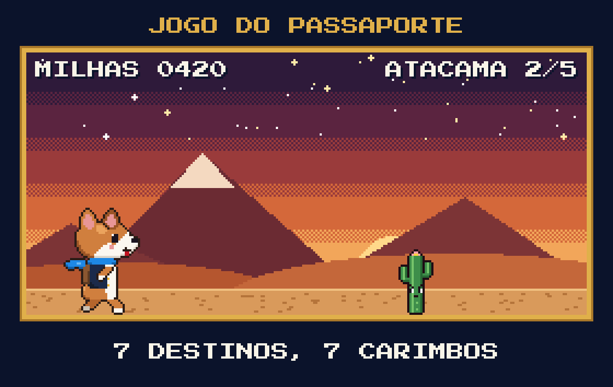

JOGO DO PASSAPORTE
Carimbe o mundo
Corra do deserto do Atacama até Orlando, pulando os obstáculos de cada destino. A cada país vencido você ganha um carimbo no passaporte, e a viagem fica mais rápida.
Para pular: Espaço, seta para cima ou clique.
ROTEIRO